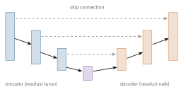

Bab 7
Melihat: Computer Vision
Computer vision adalah salah satu kuliah pertama saya, di semester musim dingin 2024/25. Kuliahnya bergerak dari fisika lensa sampai NeRF dalam sebelas pertemuan, dan setiap beberapa minggu ada tugas praktikum: pengolahan citra dasar, ekstraksi fitur dan segmentasi, optical flow dan deteksi objek, lalu rekonstruksi tiga dimensi. Di bagian optical flow, untuk pertama kalinya di buku ini, gambar dan aliran fluida bertemu.
Bagi manusia, melihat terasa tanpa usaha. Bagi komputer, gambar hanyalah tabel angka. Bab ini menyusuri jalan dari cahaya yang masuk ke lensa sampai mesin yang bisa merekonstruksi dunia tiga dimensi. Di sepanjang jalan akan terlihat bahwa banyak alat klasik, seperti konvolusi, transformasi Fourier, dan kuadrat terkecil, tetap hidup di dalam jaringan saraf modern.
Dari cahaya ke piksel
Kamera paling sederhana adalah kotak gelap dengan lubang kecil. Setiap titik di dunia memancarkan cahaya ke segala arah, dan hanya satu berkas yang lolos lewat lubang itu, sehingga terbentuk gambar terbalik yang tajam. Kelemahannya, lubang kecil berarti sedikit cahaya. Lensa mengumpulkan banyak berkas dan memfokuskannya ke satu titik. Model lensa tipis menghubungkan panjang fokus \(f\), jarak benda \(z_o\), dan jarak bayangan \(z_i\): \[\frac1f=\frac1{z_o}+\frac1{z_i}.\] Hanya benda pada satu jarak yang tepat fokus. Benda lain membentuk lingkaran kabur, dan f-number \(N=f/D\), dengan \(D\) diameter bukaan, menentukan seberapa cepat kekaburan itu tumbuh. Bukaan kecil memberi depth of field yang lebar, dengan harga gambar yang lebih gelap.
Untuk komputasi, kita kembali ke model lubang jarum. Titik \((X,Y,Z)\) dalam koordinat kamera jatuh di bidang gambar pada \(x=fX/Z\) dan \(y=fY/Z\). Pembagian dengan \(Z\) membuat proyeksi ini tidak linear, dan trik homogeneous coordinates mengembalikannya ke bentuk perkalian matriks dengan menambahkan satu koordinat: \[\lambda\begin{pmatrix}u\\v\\1\end{pmatrix}=\begin{pmatrix}f_x&s&c_x\\0&f_y&c_y\\0&0&1\end{pmatrix} \big[\,\boldsymbol R\mid\boldsymbol t\,\big]\begin{pmatrix}X\\Y\\Z\\1\end{pmatrix}. \label{eq:kamera}\] Matriks pertama, \(\boldsymbol K\), berisi sifat kamera sendiri: panjang fokus dalam piksel, titik pusat, dan kemiringan. Rotasi \(\boldsymbol R\) dan translasi \(\boldsymbol t\) menyatakan posisi kamera di dunia. Lensa nyata menambahkan distorsi radial, \(x_d=x(1+k_1r^2+k_2r^4)\), yang membuat garis lurus tampak melengkung di tepi gambar. Camera calibration memperkirakan semua parameter ini, biasanya dari beberapa foto papan catur yang posisi sudut-sudutnya diketahui.
Proyeksi perspektif mirip bayangan tangan di dinding saat kita bermain wayang dengan senter. Tangan yang dekat ke senter membuat bayangan besar, yang jauh membuat bayangan kecil. Dari bayangannya saja, kita tidak bisa tahu apakah itu tangan kecil di dekat senter atau tangan besar di dekat dinding. Kedalaman hilang saat proyeksi, dan sebagian besar kuliah ini adalah usaha untuk mendapatkannya kembali.
Sensor digital menambahkan lapisan lain. Ada noise foton dan noise elektronik, ada kuantisasi ke delapan atau dua belas bit, dan ada filter warna Bayer yang membuat setiap piksel hanya mengukur satu warna. Dua warna lainnya ditebak dari piksel tetangga dalam proses yang disebut demosaicing.
Pengolahan citra
Gambar bisa diperlakukan sebagai fungsi \(I(x,y)\), dan banyak operasi dasarnya berupa konvolusi dengan kernel kecil (Bab 5). Filter kotak atau Gauss meratakan gambar dan menekan noise. Turunan, misalnya kernel Sobel, menonjolkan tepi. Laplacian, \(\nabla^2I=I_{xx}+I_{yy}\), menonjolkan perubahan tajam ke segala arah. Besar dan arah gradien \(\nabla I\) menjadi bahan dasar deteksi tepi.
Banyak sifat filter lebih mudah dipahami di domain frekuensi. Convolution theorem menyatakan bahwa konvolusi di ruang sama dengan perkalian di frekuensi, \(\mathcal F\{I\ast k\}=\mathcal F\{I\}\cdot\mathcal F\{k\}\). Filter Gauss tetap berbentuk Gauss di domain frekuensi, sehingga ia meredam frekuensi tinggi dengan halus. Filter kotak berubah menjadi fungsi sinc yang bergelombang, sehingga meninggalkan artefak. Spektrum gambar alami umumnya turun kira-kira seperti \(1/f\), artinya sebagian besar energinya berada di frekuensi rendah.
Teorema yang sama menjelaskan mengapa deconvolution sulit. Kalau gambar kabur \(B=I\ast k+n\) dibagi di domain frekuensi, \(\mathcal F\{I\}\approx\mathcal F\{B\}/\mathcal F\{k\}\), noise ikut terbagi oleh bilangan yang hampir nol di frekuensi tempat kernel lemah, dan hasilnya meledak. Solusinya adalah regularisasi, misalnya filter Wiener. Tema yang sama akan muncul lagi pada masalah invers dalam simulasi.
Objek bisa tampak besar atau kecil. Gaussian pyramid membuat salinan gambar yang berulang kali dihaluskan lalu diperkecil setengahnya, sehingga algoritme yang bekerja pada satu ukuran bisa dijalankan di setiap tingkat piramida untuk menangkap semua skala. Piramida akan muncul lagi di optical flow, di U-Net, dan di solver multigrid.
Machine learning untuk visi
Gambar wajah berukuran \(100\times100\) piksel adalah sebuah titik di ruang berdimensi sepuluh ribu, tetapi wajah tidak memenuhi seluruh ruang itu. Principal component analysis (Pearson 1901; Hotelling 1933) mencari arah dengan varians terbesar. Untuk data terpusat \(\boldsymbol{X}\in\mathbb{R}^{N\times D}\), arah-arah itu adalah vektor eigen matriks kovarians \(\boldsymbol\Sigma=\tfrac1N\boldsymbol{X}^\top\boldsymbol{X}\) dengan nilai eigen terbesar. Turk dan Pentland (1991) menyebut vektor eigen wajah sebagai eigenfaces. Setiap wajah bisa didekati sebagai rata-rata ditambah kombinasi beberapa puluh eigenface, dan jumlah komponen dipilih dari fraksi varians yang dijelaskan, \(\sum_{k\le K}\lambda_k/\sum_k\lambda_k\).
Bayangkan memotret sekumpulan balon panjang yang melayang miring. Dari satu sudut, balon-balon tampak sebagai titik-titik yang bertumpuk. Dari sudut lain, panjangnya terlihat jelas dan balon-balon tampak tersebar. PCA memilih sudut pandang tempat data paling tersebar, karena di sanalah perbedaan antar objek paling terlihat. PCA akan muncul lagi dengan nama lain di Bab 27, yaitu proper orthogonal decomposition, alat utama untuk mereduksi medan aliran.
Selama dua dekade, visi komputer bergantung pada fitur yang dirancang manusia. Contoh paling terkenal adalah SIFT (Lowe 2004). SIFT mencari titik khas sebagai ekstrem lokal dari difference of Gaussians di seluruh skala, sehingga titik yang sama tetap ditemukan meski gambarnya diperbesar. Di sekitar setiap titik, ia menghitung histogram arah gradien relatif terhadap arah dominan, sehingga deskriptornya tahan terhadap rotasi. Hasilnya adalah vektor 128 dimensi yang bisa dicocokkan antar foto.
AlexNet (Krizhevsky, Sutskever, dan Hinton 2017) mengubah keadaan. Jaringan konvolusi yang dilatih pada ImageNet mempelajari fiturnya sendiri: kernel lapisan pertama menjadi detektor tepi dan warna, dan lapisan yang lebih dalam menjadi detektor bagian-bagian objek. Fitur dari jaringan terlatih seperti VGG atau ResNet ternyata berguna jauh di luar klasifikasi. Kuliah menunjukkan contohnya untuk fusi gambar dan estimasi kedalaman dari fokus.
Segmentasi
Segmentasi memberi label pada setiap piksel. Semantic segmentation memberi kelas seperti jalan, mobil, atau pohon, sedangkan instance segmentation juga membedakan mobil yang satu dari mobil yang lain.
Cara klasik memandang segmentasi sebagai pengelompokan. \(k\)-means (Lloyd 1982) mengelompokkan piksel berdasarkan warna dan posisi. Pendekatan graf menganggap piksel sebagai simpul dengan bobot kemiripan, lalu memotong graf di tempat ikatannya paling lemah, dan pemotongan ini bisa didekati dengan vektor eigen Laplacian graf, konsep yang muncul lagi di Bab 9. Hough transform mendeteksi bentuk parametrik seperti garis: setiap titik tepi “memilih” semua garis \(\rho=x\cos\theta+y\sin\theta\) yang melewatinya, dan garis yang nyata mengumpulkan suara terbanyak.
Cara modern memakai jaringan encoder dan decoder. Encoder mengecilkan resolusi sambil menangkap konteks, decoder memperbesarnya kembali dengan transposed convolution. U-Net (Ronneberger, Fischer, dan Brox 2015) menambahkan skip connection dari setiap tingkat encoder ke tingkat decoder yang sesuai, sehingga detail halus tidak hilang (Gambar 7.1). Model fondasi seperti Segment Anything (Kirillov dkk. 2023) kini bisa memotong objek apa pun dari petunjuk sederhana seperti satu klik.

Optical flow
Video adalah deret gambar. Optical flow adalah medan vektor \((u,v)\) yang menyatakan ke mana setiap piksel bergerak dari satu bingkai ke bingkai berikutnya. Asumsi dasarnya adalah brightness constancy: titik yang bergerak mempertahankan kecerahannya, \(I(x+u,\,y+v,\,t+1)=I(x,y,t)\). Untuk gerak kecil, ruas kiri bisa diuraikan dengan Taylor orde satu, \(I(x+u,y+v,t+1)\approx I(x,y,t)+I_xu+I_yv+I_t\), dengan \(I_x\), \(I_y\), dan \(I_t\) turunan parsial kecerahan. Mengurangkan \(I(x,y,t)\) dari kedua ruas memberi persamaan optical flow, \[I_x\,u+I_y\,v+I_t=0. \label{eq:opticalflow}\] Ini satu persamaan dengan dua bilangan yang tidak diketahui. Di setiap piksel, kita hanya bisa mengetahui komponen gerak yang searah gradien kecerahan. Masalah ini disebut aperture problem. Contoh angka membuatnya jelas. Misalkan di sebuah piksel \(I_x=2\), \(I_y=0\), dan \(I_t=-4\). Persamaannya menjadi \(2u-4=0\), sehingga \(u=2\), sedangkan \(v\) bisa bernilai berapa saja. Tepi vertikal hanya memberi tahu gerak horizontal. Untuk menentukan \(v\), kita butuh piksel lain yang gradiennya berarah berbeda, misalnya di sebuah sudut.
Tiang pembatas jalan yang bergaris miring dan berputar memberi ilusi yang sama. Kalau dilihat lewat lubang kecil, garis-garisnya tampak bergerak naik, padahal tiangnya berputar ke samping. Melalui celah sempit, hanya gerak yang tegak lurus terhadap garis yang terlihat.
Ada dua cara klasik untuk menutup kekurangan informasi ini. Lucas–Kanade menganggap semua piksel dalam sebuah jendela kecil bergerak sama, lalu menyelesaikan masalah kuadrat terkecil \[\begin{pmatrix}\sum I_x^2&\sum I_xI_y\\\sum I_xI_y&\sum I_y^2\end{pmatrix} \begin{pmatrix}u\\v\end{pmatrix}=-\begin{pmatrix}\sum I_xI_t\\\sum I_yI_t\end{pmatrix}.\] Asal persamaan ini sederhana. Setiap piksel \(p\) di jendela memberi satu persamaan \(I_x(p)u+I_y(p)v=-I_t(p)\). Dengan banyak piksel, kita punya lebih banyak persamaan daripada bilangan yang dicari, dan kita meminimalkan jumlah kuadrat sisanya, \(E(u,v)=\sum_p\big(I_x(p)u+I_y(p)v+I_t(p)\big)^2\). Menurunkan terhadap \(u\) dan \(v\) lalu menyamakannya dengan nol memberi dua persamaan normal, yang ditulis dalam bentuk matriks di atas. Matriks di ruas kiri hanya bisa dibalik kalau jendela berisi gradien ke berbagai arah, seperti di sudut dan tekstur. Di sepanjang tepi lurus, semua gradien sejajar, matriksnya berpangkat satu, dan aperture problem muncul kembali. Nilai eigen matriks yang sama juga dipakai detektor sudut Harris untuk mencari titik yang baik untuk dilacak. Untuk gerak lebih dari satu piksel, Taylor orde satu tidak berlaku lagi, dan solusinya adalah piramida: hitung flow kasar di resolusi rendah, lalu perhalus tingkat demi tingkat. Horn–Schunck (Horn dan Schunck 1981) mencari medan flow yang padat dengan meminimalkan \[E(u,v)=\iint\big(I_xu+I_yv+I_t\big)^2+\alpha^2\big(\|\nabla u\|^2+\|\nabla v\|^2\big)\,\mathrm{d}x\,\mathrm{d}y. \label{eq:hornschunck}\] Suku pertama memaksa kecocokan dengan data, suku kedua memaksa medan yang halus. Ini regularisasi dalam bentuk paling murni: data yang tidak lengkap dilengkapi dengan prior.
Jaringan saraf kemudian belajar optical flow langsung dari data. FlowNet (Fischer dkk. 2015) memakai CNN encoder dan decoder, dan varian korelasinya membandingkan fitur dua bingkai secara eksplisit. RAFT (Teed dan Deng 2020) membangun volume korelasi untuk semua pasangan piksel lalu memperbaiki flow secara iteratif dengan sebuah unit rekuren.
Hubungan dengan fluida di sini langsung. Di laboratorium, aliran diberi partikel kecil dan disinari laser, lalu dua foto berurutan dibandingkan untuk mendapatkan medan kecepatan. Teknik ini disebut particle image velocimetry, dan secara matematis ia adalah optical flow. Hubungannya bahkan lebih dalam. Untuk zat pewarna yang terbawa aliran tak termampatkan, kekekalan konsentrasi \(c\) berbunyi \(\partial_tc+\boldsymbol{u}\cdot\nabla c=0\), dan itu adalah Persamaan (7.3) dengan \(I\) diganti \(c\). Suku kehalusan dalam Persamaan (7.5) bisa diganti syarat fisika seperti \(\nabla\cdot\boldsymbol{u}=0\). Raissi, Yazdani, dan Karniadakis (2020) membawa gagasan ini sampai ujungnya: dari video konsentrasi zat pewarna saja, sebuah PINN menyimpulkan medan kecepatan dan tekanan yang tidak pernah diukur, dengan memaksakan persamaan Navier–Stokes di dalam loss (Bab 25).
Deteksi objek
Deteksi menjawab dua pertanyaan sekaligus: apa, dan di mana. Keluarannya berupa kotak pembatas beserta kelasnya. Tumpang tindih antara kotak tebakan \(A\) dan kotak benar \(B\) diukur dengan intersection over union, \(|A\cap B|/|A\cup B|\).
Pendekatan dua tahap dimulai dengan R-CNN, yang mengusulkan sekitar dua ribu wilayah dengan selective search lalu mengklasifikasi masing-masing dengan CNN. Fast R-CNN (Girshick 2015) menghitung peta fitur sekali untuk seluruh gambar dan memotong wilayah dari peta itu. Faster R-CNN (Ren dkk. 2015) mengganti selective search dengan jaringan pengusul wilayah yang dipelajari, dan menambahkan cabang mask ke arsitektur ini menghasilkan instance segmentation. Pendekatan satu tahap seperti YOLO (Redmon dkk. 2015) membagi gambar menjadi grid dan membiarkan setiap sel langsung memprediksi kotak dan kelas dalam satu lintasan. Jauh lebih cepat, cocok untuk waktu nyata.
Banyak kotak yang tumpang tindih untuk objek yang sama dibersihkan dengan non-maximum suppression: simpan kotak dengan skor tertinggi, buang kotak lain yang tumpang tindihnya dengan kotak itu melewati ambang. Kinerja diukur dengan kurva presisi terhadap recall, dan luas di bawahnya, average precision, dirata-ratakan atas semua kelas.
Geometri banyak pandang
Satu kamera kehilangan kedalaman, tetapi dua kamera bisa mendapatkannya kembali, persis seperti dua mata kita (Hartley dan Zisserman 2004). Titik \(\boldsymbol x\) di gambar kiri bisa berasal dari titik mana pun di sepanjang sinar dari pusat kamera kiri. Dilihat dari kamera kanan, sinar itu tampak sebagai garis, yang disebut epipolar line, dan pasangan titik di gambar kanan pasti terletak di garis tersebut. Secara aljabar, \(\boldsymbol x'^\top\boldsymbol F\,\boldsymbol x=0\), dengan \(\boldsymbol F\) matriks fundamental \(3\times3\) berpangkat dua. Untuk kamera terkalibrasi, matriks padanannya adalah matriks esensial \(\boldsymbol E=[\boldsymbol t]_\times\boldsymbol R\). Pencarian pasangan titik berubah dari pencarian dua dimensi menjadi satu dimensi.
Setelah rectification, garis epipolar menjadi horizontal. Pergeseran horizontal titik yang sama antara kedua gambar disebut disparity \(d\), dan segitiga sebangun memberi \[Z=\frac{f\,B}{d},\] dengan \(f\) panjang fokus dalam piksel dan \(B\) jarak antar kamera. Penurunannya hanya memakai proyeksi lubang jarum. Letakkan kamera kiri di titik asal dan kamera kanan bergeser sejauh \(B\) di sumbu \(x\). Titik \((X,Z)\) jatuh di gambar kiri pada \(x_L=fX/Z\) dan di gambar kanan pada \(x_R=f(X-B)/Z\). Selisihnya, \(d=x_L-x_R=fB/Z\), tidak lagi bergantung pada \(X\), dan membalik persamaan itu memberi \(Z=fB/d\). Kamera stereo dengan \(f=700\) piksel dan \(B=0{,}12\) meter yang melihat titik dengan disparity dua puluh piksel menempatkan titik itu pada \(4{,}2\) meter. Kalau disparity salah satu piksel saja, kedalaman menjadi \(4{,}0\) atau \(4{,}4\) meter. Semakin jauh objeknya, semakin kecil disparity-nya, dan semakin besar galat relatif kedalamannya.
Structure from motion memperluas gagasan ini ke banyak foto dari kamera yang bergerak: cocokkan fitur antar foto, perkirakan pose kamera, triangulasi titik-titik tiga dimensi, lalu perhalus semuanya bersama-sama.
Visi tiga dimensi
Dunia tiga dimensi bisa direpresentasikan dengan banyak cara. Peta kedalaman memberi satu angka per piksel. Grid voxel sederhana, tetapi memorinya tumbuh kubik. Awan titik hemat, tetapi tidak punya permukaan. Mesh punya permukaan eksplisit, tetapi topologinya sulit diubah. Permukaan implisit \(f(\boldsymbol{x})=0\) menyimpan bentuk sebagai himpunan nol sebuah fungsi. Memprediksi kedalaman dari satu gambar mengandung ambiguitas skala, karena miniatur yang dekat dan bangunan nyata yang jauh bisa menghasilkan gambar yang sama. Karena itu galat sering diukur dengan ukuran yang tidak menghukum faktor skala global.
Kuliah ditutup dengan NeRF (Mildenhall dkk. 2020). Sebuah MLP menerima posisi \(\boldsymbol{x}\) dan arah pandang \(\boldsymbol d\), lalu mengeluarkan kerapatan \(\sigma(\boldsymbol{x})\) dan warna \(\boldsymbol c(\boldsymbol{x},\boldsymbol d)\). Warna satu piksel dihitung dengan volume rendering sepanjang sinar \(\boldsymbol r(t)=\boldsymbol o+t\boldsymbol d\), \[\boldsymbol C(\boldsymbol r)=\int_{t_n}^{t_f}T(t)\,\sigma(\boldsymbol r(t))\,\boldsymbol c(\boldsymbol r(t),\boldsymbol d)\,\mathrm{d}t,\qquad T(t)=\exp\Big(-\int_{t_n}^{t}\sigma(\boldsymbol r(s))\,\mathrm{d}s\Big),\] dengan \(T(t)\) peluang cahaya lolos sampai titik \(t\) tanpa terhalang. Jaringan dilatih dengan membandingkan warna hasil render dengan foto, dan setelah terlatih, ia bisa merender sudut pandang yang belum pernah difoto. NeRF adalah contoh neural field, fungsi kontinu dari koordinat ke besaran fisik. Neural field dibahas lebih luas di Bab 11, dan kekerabatannya dengan PINN dekat sekali.
Pertemuan terakhir membahas arah-arah baru: vision transformer yang memotong gambar menjadi petak \(16\times16\) dan memperlakukannya seperti kata (Dosovitskiy dkk. 2020), model fondasi yang dilatih pada pasangan gambar dan teks, dan computational imaging yang merancang kamera dan algoritme bersama-sama. Kuliah juga menekankan batasnya. Model besar tidak selalu benar, dan stiker kecil yang dirancang khusus bisa membuat detektor gagal mengenali rambu berhenti (Eykholt dkk. 2017). Alat seperti Grad-CAM (Selvaraju dkk. 2016) membantu melihat bagian gambar mana yang dipakai model untuk memutuskan, topik yang kembali di Bab 13.
Catatan sumber.
Bab ini mengikuti sebelas kuliah Computer Vision beserta praktikumnya: pembentukan citra, pengolahan citra, machine learning untuk visi, ekstraksi fitur, segmentasi, optical flow, deteksi objek, geometri banyak pandang, visi tiga dimensi, dan tren. Buku rujukan yang direkomendasikan adalah Szeliski (2022) dan Hartley dan Zisserman (2004).